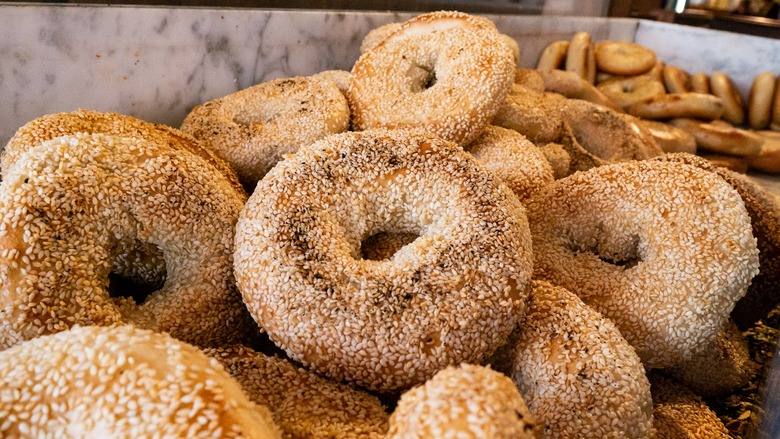

Bagels are an iconic New York City food. It is a small and dense bread with a malty flavor and a dark, shiny, and crunchy exterior which should snap when bitten into it. In the past, bagels were made in four original varieties: plain, poppy, salt or sesame, but nowadays they are made with garlic, onion, cinnamon, and raisins, best enjoyed fresh out of the oven and paired with butter, scallions, lox, and cream cheese.
Meal prep time : 2 hours 20 minutes
Servings : 8